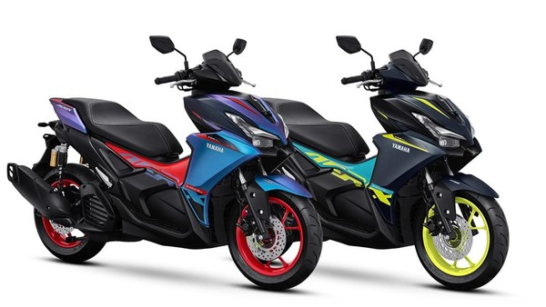
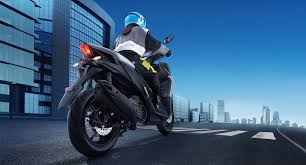
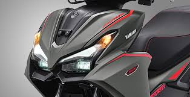

AEROK ALPHA
Title description, 18 DESENBER 2024

Description
Yamaha Aerox Alpha adalah skutemak sporty dengan mesin 155cc Blue Core, VVA, dan YECVT (untuk varian Turbo dan Turbo Ultimate) yang menawarkan akselerasi cepat dan efisiensi bahan bakar. Skuter ini hadir dalam 4 varian: Standar, Cybercity, Turbo, dan Turbo Ultimate, dengan perbedaan pada fitur, desain, dan warna. Aerox Alpha juga dilengkapi dengan fitur modern seperti lampu LED, panel instrumen digital, dan ruang bagasi luas.
AEROK
Title description, Sep 2, 2017
Produk
Yamaha Aerox standar adalah motor matic yang menawarkan kombinasi desain sporty, performa bertenaga, dan fitur-fitur modern. Aerox standar dilengkapi mesin 155 cc dengan teknologi VVA, memberikan tarikan yang lebih bertenaga. Desain body aerodinamis dengan ciri khas "X" menambah kesan sporty. Fitur-fitur seperti Smart Key System, Y-Connect, dan bagasi yang luas juga menjadi daya tarik.
About Me

Yamaha Aerox Alpha menggunakan mesin 155cc Blue Core VVA (Variable Valve Actuation) generasi terbaru. Mesin ini menghasilkan tenaga 15,1 hp pada 8.000 rpm dan torsi 14,2 Nm pada 6.500 rpm. Varian Turbo dan Turbo Ultimate memiliki tambahan teknologi YECVT Turbo (Yamaha Electric CVT Turbo), memberikan sensasi berkendara seperti motor turbo. Berikut detail spesifikasi mesinnya: Tipe Mesin: 4 langkah, SOHC, 4 katup, berpendingin cairan, VVA. Kapasitas Mesin: 155,09cc. Daya Maksimum: 11.3 kW (15.1 hp) pada 8.000 rpm. Torsi Maksimum: 14.2 Nm pada 6.500 rpm. Sistem Starter: Electric. Diameter x Langkah: 58 x 58,7 mm. Transmisi: CVT (Continuous Variable Transmission). YECVT Turbo (Varian Turbo dan Turbo Ultimate): Membantu meningkatkan akselerasi dan deselerasi melalui tombol Y-Shift dengan 3 tingkatan. Riding Mode: T (Town) untuk berkendara santai dan S (Sport) untuk performa lebih responsif. Sistem Puli Elektronik: Pada varian Turbo dan Turbo Ultimate, kontrol puli dilakukan secara elektronik. Fitur Y-Connect: Memungkinkan koneksi dengan smartphone untuk monitoring kondisi motor, termasuk konsumsi bahan bakar dan lokasi parkir. TFT Infotainment Display: Menampilkan informasi lengkap seperti Odo/Trip meter, riding mode, dan navigasi Turn by Turn yang terintegrasi dengan google
Popular Post
 